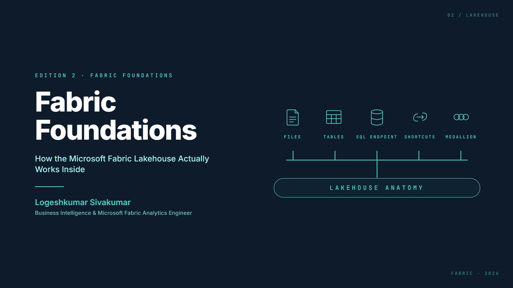

How the Microsoft Fabric Lakehouse Actually Works Inside
Logeshkumar Sivakumar · August 4, 2026 · 4 min read

Most teams that start with a Microsoft Fabric Lakehouse make the same mistake. They upload files, point a report at them, and call the pipeline done. Weeks later, queries are slow, data is inconsistent, and nobody can explain which version of a table is the real one. The problem is not the Lakehouse. The problem is not understanding what the Lakehouse is made of before putting data into it.
What are the two halves of a Microsoft Fabric Lakehouse?
A Lakehouse in Microsoft Fabric has two distinct areas. The Files area is the unmanaged side. Any format lands here: CSV, JSON, Parquet, images, logs. Files is the landing zone for raw, as-ingested data organized in folders. The Tables area is the managed side. Structured data lives here as Delta tables, which Spark and the SQL analytics endpoint query as relational tables.
The flow is directional: raw data lands in Files, gets transformed, and the cleaned result becomes a managed Delta table in Tables. Fabric provides a built-in Load to Tables action that reads a file and writes it out as a managed Delta table. Reporting should always read from Tables, never directly from Files.
Why does the SQL analytics endpoint matter, and what can it not do?
Every Lakehouse automatically gets a SQL analytics endpoint. The SQL analytics endpoint is a read-only T-SQL query surface over the Lakehouse's Delta tables, provided by Microsoft Fabric for ad-hoc analysis, views, and serving Power BI. The key constraint: the SQL analytics endpoint cannot write. No INSERT, No UPDATE, No Transactions.
To transform data inside a Lakehouse, use Spark notebooks. To run T-SQL writes and full transactions, use a Warehouse instead. Getting this boundary wrong leads teams to build workarounds that Fabric already solves with a different item.
When should you Shortcut instead of copy?
OneLake Shortcuts make data appear inside a Lakehouse without moving it. Internal shortcuts point to data in another Lakehouse, Warehouse, or workspace within the same OneLake. External shortcuts point to storage outside Fabric, such as Amazon S3, Azure Data Lake Storage Gen2, or Google Cloud Storage.
The rule: default to a shortcut. Copies drift out of sync, consume extra storage, and require pipeline maintenance. Reach for a physical copy only when you need isolation, a different refresh cadence, or heavy transformation that should not touch the source. When a partner drops files daily into an S3 bucket, the strong answer is an external OneLake shortcut to that S3 path, not a scheduled copy job.
How does the medallion layout tie the Lakehouse together?
Medallion is not a Fabric feature to switch on. Medallion is a design pattern applied to the Lakehouse to separate data by quality. Bronze holds raw, as-ingested data, a faithful history you can reprocess from. Silver holds cleaned, conformed, de-duplicated data shaped into usable entities. Gold holds business-ready star schemas and aggregates shaped for reporting. The reason medallion works: if a transformation breaks, the raw data in bronze is untouched, and silver and gold can be rebuilt. Every consumer gets a clear contract: analysts read from gold, engineers debug from bronze.
The decision that saves months of rework
A Lakehouse that separates raw landing from curated tables, respects the read-only boundary of the SQL analytics endpoint, uses shortcuts instead of copies, and structures data into bronze, silver, and gold layers is a Lakehouse that scales without surprises. Getting these four decisions right on day one is the difference between a clean pipeline and a rebuild.
Previous in this series: The Mental Model Behind Microsoft Fabric
References:
- What is a Lakehouse in Microsoft Fabric? https://learn.microsoft.com/en-us/fabric/data-engineering/lakehouse-overview
- What is the SQL analytics endpoint for a Lakehouse? https://learn.microsoft.com/en-us/fabric/data-engineering/lakehouse-sql-analytics-endpoint
- OneLake shortcuts: https://learn.microsoft.com/en-us/fabric/onelake/onelake-shortcuts
#MicrosoftFabric #Lakehouse #OneLake #DeltaLake #SQLAnalyticsEndpoint #DataEngineering #MedallionArchitecture #PowerBI